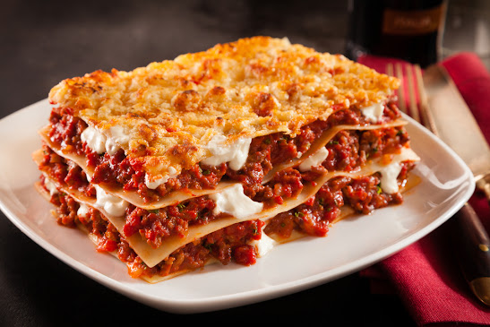
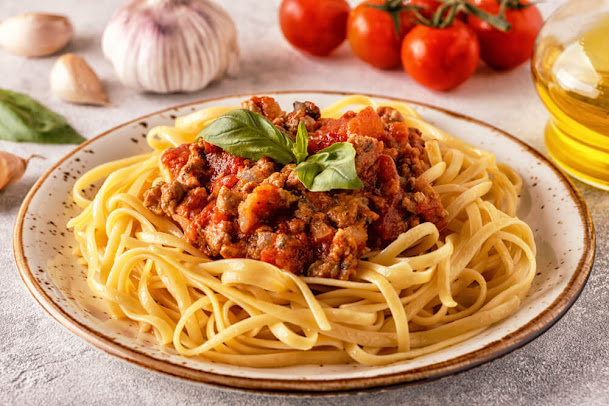
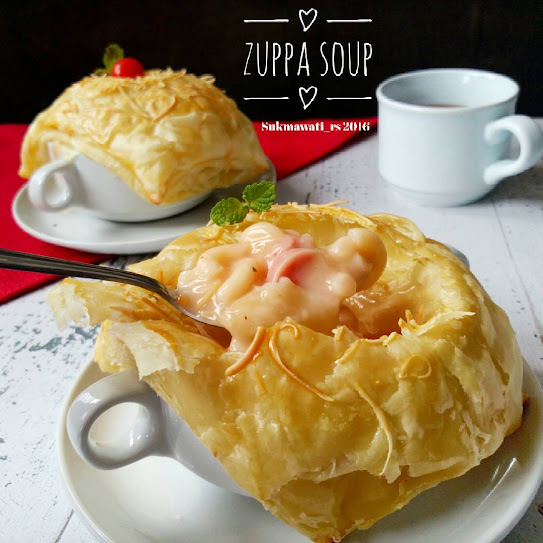

Lasagna
Secara harfiah Lasagna berasal dari kata ‘lasagne’ yang berarti berisikan daging.Selain daging, sebenarnya Lasagna bisa diisi dengan banyak isian lain seperti syuran, makanan laut, dan sebagainya.
link resepSpaghetti
Makanan ini berupa pasta yang berbentuk panjang dan tipis seperti mie kebanyakan dan terbuat dari semolina, namun di beberapa tempat bahan spaghetti bisa diganti dengan tepung lain. Pasta ini disajikan dengan saus tomat khas Italia yang berwarna merah.
link resepZuppa Soup
Konon asal kata suppa (soup, soupe, sop, sopen, zuppa) aslinya dari kata Frankish (Franks, rumpun bangsa Jerman yang terkenal sangat perkasa, dahulu datang mendiami Gaul, bekas provinsi Roma dan akhirnya menjadi Perancis).
link resepGelato
Gelato sudah dikenal di hampir seluruh dunia, merupakan es krim khas Italia yang memiliki tekstur yang lebih padat dan lebih lezat dibandingkan dengan es krim biasa.
link resep